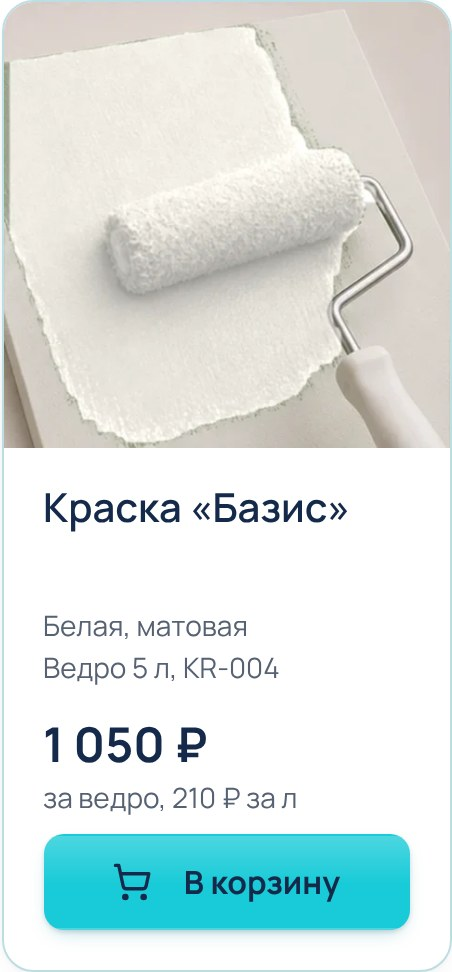
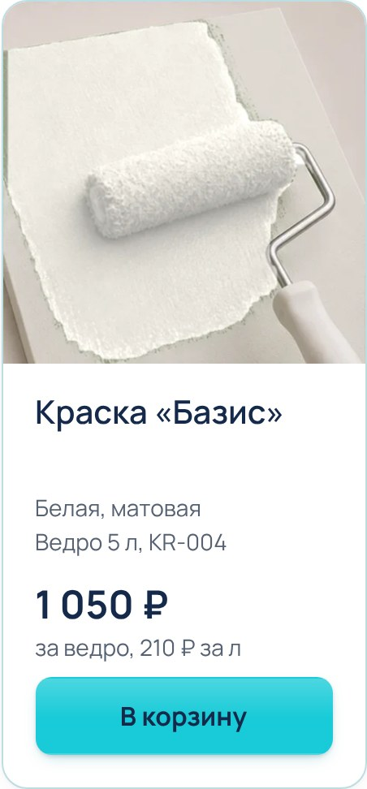
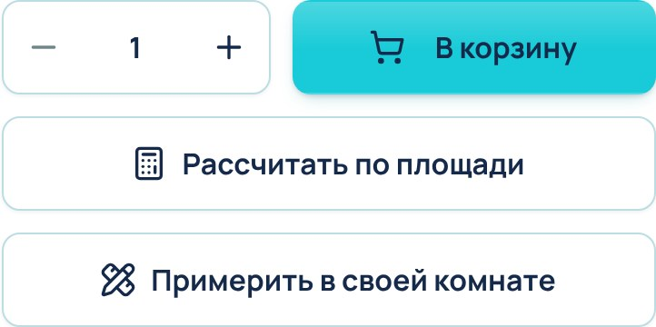
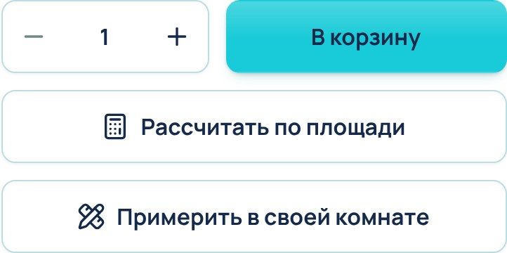

Иконку корзины добавил W4 вместе со стилем «Смесь 2» – 26.11 в образце был выбран вариант Б (иконка не прыгает). Ниже – сайт как есть и тот же сайт без иконки.




Почему А: на странице товара у «Рассчитать по площади» и «Примерить в своей комнате» иконки есть – без иконки «В корзину» выбивается. В карточках иконка помогает узнать главную кнопку с первого взгляда.